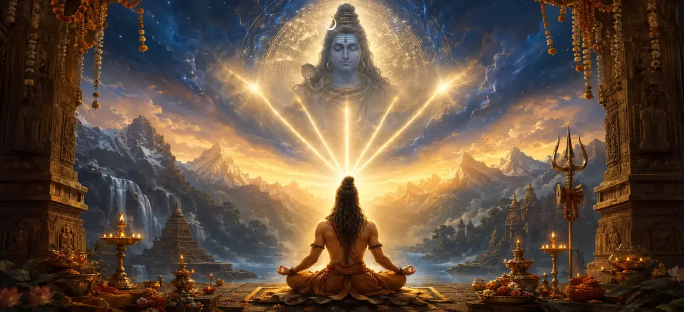

पंचाक्षर मन्त्र की महिमा - भाग 3
वायवीय संहिता का उनतालीसवां अध्याय पंचाक्षरी मंत्र की गहन शिक्षाओं को उनकी भव्य और अंतिम परिणति तक ले जाता है।
ऋषि वायु मंत्र प्राप्ति के सर्वोच्च फल - पूर्ण मुक्ति (मोक्ष) और भगवान शिव के दिव्य सार के साथ शाश्वत मिलन को प्रकट करते हैं।
यह तीसरा और अंतिम भाग पाँच-अक्षर मंत्र को समर्पित अध्यायों की त्रयी का ताज है, जो सर्वोच्च आध्यात्मिक पूर्ति का प्रवेश द्वार खोलता है।
अध्याय 49 की मुख्य बातें
परम परिणति
पंचाक्षरी प्रवचन के शिखर पर पहुँचता है।
परम मुक्ति
मोक्ष और पुनर्जन्म के चक्र से मुक्ति का विवरण।
शाश्वत एकता
भगवान शिव के दिव्य निवास में स्थायी निवास का वर्णन
सत्य का बोध
आत्मा और शिव की अद्वैत वास्तविकता को उजागर करता है।
त्रयी निष्कर्ष
पंचाक्षर मंत्र की महिमा पर अध्याय का समापन।
गुरु परिवर्तन
अगले अध्याय में गुरु की शिक्षा के लिए साधक को तैयार करता है।
इस अध्याय में मुख्य विषय
मंत्र साधना का चरम फल
ऋषि वायु कहते हैं कि जब पंचाक्षरी मंत्र को निरंतर भक्ति और ध्यान के माध्यम से महारत हासिल हो जाती है, तो यह आध्यात्मिक पूर्णता का सर्वोच्च फल देता है।
अभ्यासी नश्वर अस्तित्व की सभी सीमाओं को पार कर जाता है और अपनी वास्तविक दिव्य पहचान के प्रति जागृत हो जाता है।
माया और अज्ञान का पूर्ण विघटन
माया (भ्रम) और अज्ञान (अज्ञान) का अंधा कर देने वाला पर्दा मंत्र की उज्ज्वल रोशनी से पूरी तरह से जल जाता है।
द्वंद्व मिट जाते हैं, और साधक पूरे ब्रह्मांड को भगवान शिव की अभिव्यक्ति के रूप में देखता है।
सर्वोच्च मुक्ति (मोक्ष) की प्राप्ति
इस परम अनुभूति के माध्यम से, आत्मा जन्म और मृत्यु के चक्र से हमेशा के लिए मुक्त होकर मोक्ष प्राप्त कर लेती है।
सर्वोच्च के साथ इस मिलन से बड़ी कोई उपलब्धि, कोई ऊंची मंजिल नहीं है।
शिव की दिव्य कृपा में सदैव बने रहना
मुक्त आत्मा भगवान शिव की निर्मल कृपा और प्रकाश का आनंद लेते हुए, कैलाश के परम आनंद में अनंत काल तक विश्राम करती है।
समस्त दुःख, भय और चिन्ता स्थायी रूप से नष्ट हो जाते हैं।
मन्त्र की महिमा का उपसंहार
ऋषि वायु ने पांच अक्षरों वाले मंत्र पर अपने शानदार तीन-भागीय प्रवचन का समापन करते हुए इसे हर युग के सभी साधकों के लिए सर्वोच्च मार्ग बताया।
वह इस बात पर जोर देते हैं कि मंत्र में विश्वास स्वयं भगवान शिव में विश्वास है।
अनुभूति में गुरु की महत्वपूर्ण भूमिका
जैसे ही ऋषि ध्यान से सुनते हैं, ऋषि वायु बताते हैं कि मंत्र की शक्ति एक प्रबुद्ध गुरु की कृपा से खुलती और प्रसारित होती है।
यह निर्बाध परिवर्तन सीधे अगले गहन विषय की ओर ले जाता है: गुरु की महानता।
अध्याय 50 की ओर (गुरु की महानता)
अध्याय 49 में पंचाक्षरी मंत्र पर शानदार व्याख्या पूरी करने के बाद, ऋषि वायु अध्याय 50, 'गुरु की महानता' का वर्णन करने के लिए तैयार होते हैं।
यह अगला अध्याय आत्मा को परम मुक्ति की ओर मार्गदर्शन करने में आध्यात्मिक गुरु की अपरिहार्य भूमिका पर प्रकाश डालेगा।
अध्याय 49 की मुख्य शिक्षाएँ
परम फल
मंत्र के माध्यम से आध्यात्मिक पूर्णता प्राप्त करना।
माया का नाश
भ्रम और अज्ञान को पूरी तरह से जलाकर नष्ट कर दो।
परम मोक्ष
पुनर्जन्म के चक्र से हमेशा के लिए मुक्त हो जाना।
शिव का निवास
शाश्वत आनंद और अनुग्रह में विश्राम।
त्रयी मुकुट
मन्त्र की महिमा का भव्य निष्कर्ष
गुरु ब्रिज
गुरु की शिक्षाओं में सुचारु रूप से मार्गदर्शन करना।
आध्यात्मिक चिंतन
जब पंचाक्षरी मंत्र अहंकार और भ्रम के हर निशान को विलीन कर देता है, तो व्यक्तिगत आत्मा शिव चेतना के सर्वोच्च महासागर में विलीन हो जाती है, जैसे नदी समुद्र में लौट आती है।
अध्याय 49 का संदेश जीना
अपनी साधना को इस दृढ़ विश्वास के साथ करें कि परम मुक्ति इसी जीवनकाल में प्राप्त की जा सकती है।
मंत्र को अपने मन को सभी छोटी-मोटी शिकायतों और सांसारिक मोह-माया से मुक्त करने दें।
गुरु के माध्यम से भगवान शिव के प्रत्यक्ष उपहार के रूप में मंत्र के गहन ज्ञान का सम्मान करें।
प्रमुख आध्यात्मिक अवधारणाएँ
परम आध्यात्मिक मुक्ति की प्राप्ति.
ब्रह्मांडीय भ्रम का विनाश.
भगवान शिव के साथ घनिष्ठ मिलन.
अभ्यास का पूर्ण एवं चरम फल
तीन मन्त्र अध्यायों का समापन।
गुरु का सर्वोत्कृष्ट सिद्धांत.
अध्याय सारांश
वायवीय संहिता अध्याय 49 पाँच अक्षरों वाले मंत्र की महिमा का भाग 3 प्रस्तुत करता है, जो त्रयी की अंतिम परिणति को दर्शाता है। माया के पूर्ण विनाश, सर्वोच्च मोक्ष की प्राप्ति, और शिव की दिव्य कृपा में शाश्वत निवास का विवरण देते हुए, यह अध्याय पंचाक्षरी शिक्षाओं का ताज पहनाता है और स्वाभाविक रूप से अध्याय 50, 'गुरु की महानता' में परिवर्तित हो जाता है।
अक्सर पूछे जाने वाले प्रश्न
1. वायवीय संहिता अध्याय 49 का प्राथमिक विषय क्या है?
अध्याय 49 पंचाक्षरी मंत्र के गुरु अभ्यास के माध्यम से प्राप्त परम चरमोत्कर्ष, सर्वोच्च मुक्ति और भगवान शिव के साथ शाश्वत एकता को प्रस्तुत करता है।
2. भाग 3 पंचाक्षरी मंत्र की शिक्षाओं का समापन कैसे करता है?
यह मंत्र प्राप्ति के उच्चतम फल - मोक्ष या अंतिम मुक्ति को प्रकट करता है, जिसमें भक्त स्थायी रूप से शिव के सर्वोच्च प्रकाश में विलीन हो जाता है।
3. मंत्र पर यह अंतिम समापन प्रवचन कौन देता है?
ऋषि वायु ने श्रोता ऋषियों को पांच अक्षरों वाले मंत्र पर अपनी पवित्र व्याख्या समाप्त की।
4. अध्याय 49 के बाद नेविगेशन के लिए अगला अध्याय कौन सा है?
नेविगेशन के लिए अगले अध्याय का शीर्षक 'गुरु की महानता' है।
"जब पंचाक्षरी मंत्र हृदय में अपना पवित्र कार्य पूरा कर लेता है, तो आत्मा सभी बंधनों से मुक्त हो जाती है, और भगवान शिव के सर्वोच्च प्रकाश में अनंत काल तक चमकती रहती है।"
वायवीय संहिता के माध्यम से जारी रखें
अध्याय 49 का समापन पांच अक्षरों वाले मंत्र की महिमा - भाग 3। गुरु की महानता को जारी रखें।